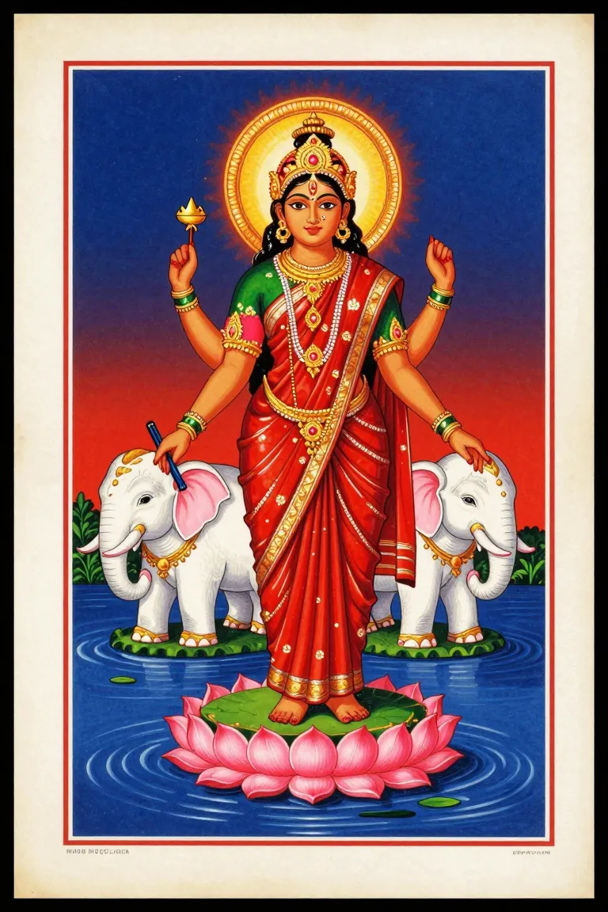

печать · c.1894–1960 · также: Олеография, Календарное искусство, Базарная печать с богами, Оттиск Ravi Varma Press
Образ божества, напечатанный камневой литографией во многих цветах для домашнего алтаря и стены лавки. Масляный глянец, насыщенный цвет и гладкий переход копируют картины раджи Рави Варма.

Главная идея
Литография во многих цветах способна скопировать гладкую масляную картину божества и поместить её в каждый дом за несколько анна.
Принципы дизайна
Копируйте живописный оригинал: гладкая лепка, мягкий свет и фигура в центре.
Печатайте 6–12 камней или пластин, по одному на цвет, прозрачными красками, которые смешиваются.
Берите киноварь, ультрамарин, золотисто-жёлтый и тёплый телесный тон как основные краски.
Рисуйте нимб, корону и украшения золотисто-жёлтой краской и тонкой тёмной линией.
Ставьте простое название на деванагари или английском в полосе внизу листа.
Завершайте лист масляным лаком для глубокого глянца.
Держите приводку в пределах 0,5 мм, чтобы лицо и глаза оставались чёткими.
Антипаттерны
Плоский матовый цвет без перехода
Растровая точка, видимая на расстоянии чтения
Грубый или простой контур ксилографического типа
Бледная пастельная палитра без сильного красного и синего